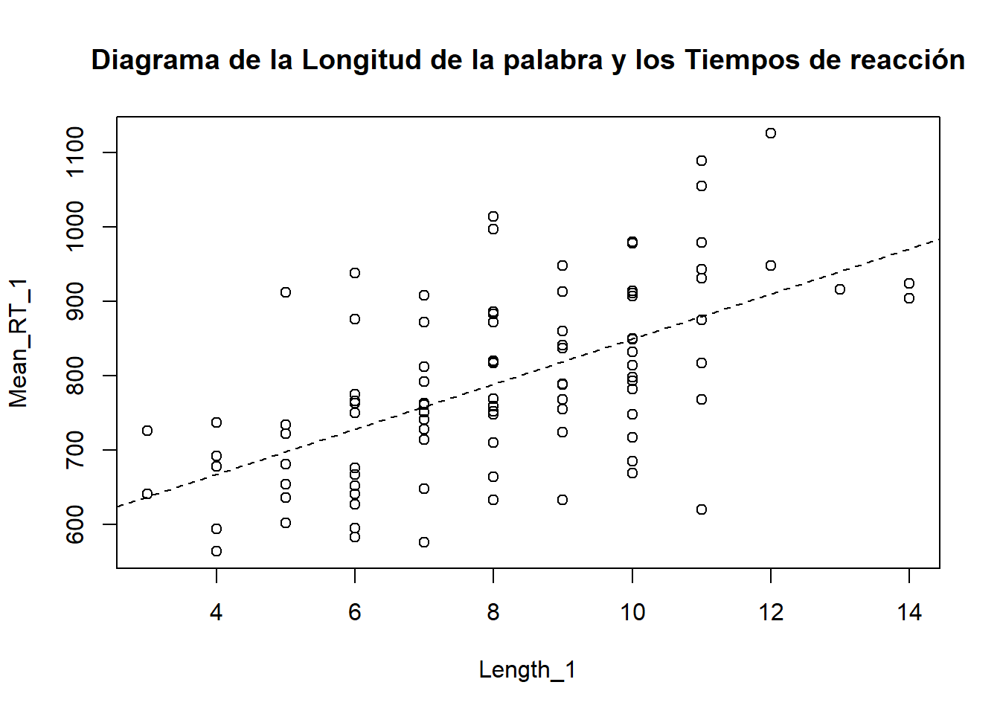

library(ggplot2);
library(energy);Warning: package 'energy' was built under R version 4.2.3library(car)Loading required package: carDatalibrary(ggplot2);
library(energy);Warning: package 'energy' was built under R version 4.2.3library(car)Loading required package: carDatadata(ldt)Warning in data(ldt): data set 'ldt' not foundH\(_{1}\) = En cuanto más larga es una palabra, mayor será el tiempo de reconocimiento.
H\(_{0}\) = No hay correlación entre la longitud de la palabra y el tiempo de reconocimiento.
summary(ldt) Length Freq Mean_RT
Min. : 3.00 Min. : 0.0 Min. : 564.2
1st Qu.: 6.00 1st Qu.: 53.5 1st Qu.: 713.1
Median : 8.00 Median : 310.5 Median : 784.9
Mean : 8.23 Mean : 3350.3 Mean : 808.3
3rd Qu.:10.00 3rd Qu.: 2103.2 3rd Qu.: 905.2
Max. :15.00 Max. :75075.0 Max. :1458.8 str(ldt)'data.frame': 100 obs. of 3 variables:
$ Length : int 8 10 7 6 12 12 3 11 11 5 ...
$ Freq : int 131 82 0 592 2 9 14013 15 48 290 ...
$ Mean_RT: num 819 978 908 766 1125 ...summary(ldt) Length Freq Mean_RT
Min. : 3.00 Min. : 0.0 Min. : 564.2
1st Qu.: 6.00 1st Qu.: 53.5 1st Qu.: 713.1
Median : 8.00 Median : 310.5 Median : 784.9
Mean : 8.23 Mean : 3350.3 Mean : 808.3
3rd Qu.:10.00 3rd Qu.: 2103.2 3rd Qu.: 905.2
Max. :15.00 Max. :75075.0 Max. :1458.8 attach(ldt)plot(Mean_RT~Length, main = "Diagrama de la Longitud de la palabra y los Tiempos de reacción")#Diagrama de la correlacióncor(Mean_RT, Length, method="pearson")[1] 0.6147456cor.test(Length, Mean_RT, alternative = "greater")
Pearson's product-moment correlation
data: Length and Mean_RT
t = 7.7158, df = 98, p-value = 5.097e-12
alternative hypothesis: true correlation is greater than 0
95 percent confidence interval:
0.5001489 1.0000000
sample estimates:
cor
0.6147456 modelo1 <- lm(Mean_RT~Length)
summary(modelo1)
Call:
lm(formula = Mean_RT ~ Length)
Residuals:
Min 1Q Median 3Q Max
-291.74 -77.81 -3.69 47.92 546.22
Coefficients:
Estimate Std. Error t value Pr(>|t|)
(Intercept) 498.443 41.949 11.882 < 2e-16 ***
Length 37.644 4.879 7.716 1.02e-11 ***
---
Signif. codes: 0 '***' 0.001 '**' 0.01 '*' 0.05 '.' 0.1 ' ' 1
Residual standard error: 121.5 on 98 degrees of freedom
Multiple R-squared: 0.3779, Adjusted R-squared: 0.3716
F-statistic: 59.53 on 1 and 98 DF, p-value: 1.019e-11observado <- head(Mean_RT)
observado[1] 819.19 977.63 908.22 766.30 1125.42 948.33ajustado <- head(fitted(modelo1))
ajustado 1 2 3 4 5 6
799.5952 874.8831 761.9512 724.3072 950.1711 950.1711 Residuos (valores observados- valores ajustados)
residuos <- head(residuals(modelo1))
residuos 1 2 3 4 5 6
19.594813 102.746875 146.268782 41.992751 175.248936 -1.841064 Mean_RT_1 <- Mean_RT[Mean_RT < 1200]
Length_1 <- Length[Mean_RT < 1200]
length(Mean_RT_1)[1] 97modelo2 <- lm(Mean_RT_1 ~ Length_1)cor(Mean_RT_1, Length_1)[1] 0.5886011plot(Mean_RT_1~Length_1, main = "Diagrama de la Longitud de la palabra y los Tiempos de reacción")#Diagrama de la correlación
abline(modelo2, lty = 2)
ggplot(modelo2, aes(x= Length_1, y = Mean_RT_1))+ geom_point(shape=1, size = 3)+ stat_smooth(method =lm)`geom_smooth()` using formula = 'y ~ x'El valor de p es inferior a 0.05, por tanto, la distribución NO es normal
mvnorm.etest(cbind(Length, Mean_RT), R = 999)
Energy test of multivariate normality: estimated parameters
data: x, sample size 100, dimension 2, replicates 999
E-statistic = 1.0944, p-value = 0.01101El valor de p es superior a 0.05, por tanto, la distribución es normal:
mvnorm.etest(cbind(Length_1, Mean_RT_1), R = 999)
Energy test of multivariate normality: estimated parameters
data: x, sample size 97, dimension 2, replicates 999
E-statistic = 0.48503, p-value = 0.8819La hipótesis nula de esta prueba dice los residuos tienen homocedasticidad. Si el valor es p > 0.05 NO hay heterocedasticidad.
ncvTest(modelo1)Non-constant Variance Score Test
Variance formula: ~ fitted.values
Chisquare = 12.48847, Df = 1, p = 0.00040947durbinWatsonTest(modelo1) lag Autocorrelation D-W Statistic p-value
1 -0.06224578 1.917831 0.666
Alternative hypothesis: rho != 0ncvTest(modelo2)Non-constant Variance Score Test
Variance formula: ~ fitted.values
Chisquare = 1.243717, Df = 1, p = 0.26476durbinWatsonTest(modelo2) lag Autocorrelation D-W Statistic p-value
1 0.03234626 1.923466 0.702
Alternative hypothesis: rho != 0cor.test(Length_1, Mean_RT_1, alternative = "greater")
Pearson's product-moment correlation
data: Length_1 and Mean_RT_1
t = 7.0965, df = 95, p-value = 1.145e-10
alternative hypothesis: true correlation is greater than 0
95 percent confidence interval:
0.4667205 1.0000000
sample estimates:
cor
0.5886011 detach(ldt)Se usan cuando los datos no son lineales pero son monotónicos
lex <- c(47, 89, 131, 186, 245, 284, 362, 444, 553, 627)
gram <- c(0, 2, 1, 3, 5, 9, 7, 16, 25, 34)H\(_{1}\):Hay una correlación positiva entre el tamaño del vocabulario y la complejidad gramatical.
H\(_{0}\):No hay correlación entre el tamaño del vocabulario y la complejidad gramatical.
plot(gram ~ lex, main = "Tamaño del vocabulario y complejidad gramatical", xlab = "Tamaño del vocabulario", ylab = "Complejidad gramatical")
lines(lowess(gram ~ lex))cor(gram, lex, method = "spearman")[1] 0.9757576cor(gram, lex, method = "kendall")[1] 0.9111111cor.test(gram, lex, method = "spearman", alternative = "greater")
Spearman's rank correlation rho
data: gram and lex
S = 4, p-value < 2.2e-16
alternative hypothesis: true rho is greater than 0
sample estimates:
rho
0.9757576 cor.test(gram, lex, method = "kendall", alternative = "greater")
Kendall's rank correlation tau
data: gram and lex
T = 43, p-value = 1.488e-05
alternative hypothesis: true tau is greater than 0
sample estimates:
tau
0.9111111